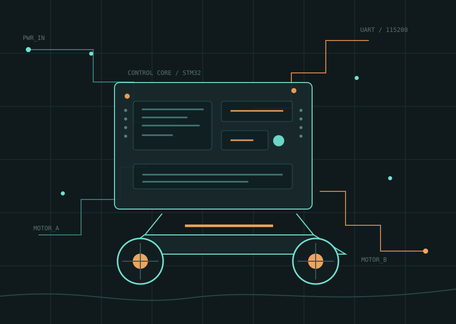

available for interesting problems
Hardware that
moves. Firmware
that holds up.
I'm Huang Fengfan, an undergraduate engineer at Hohai University building embedded controllers, upgrade paths, and robots that behave in the real world.

selected work
Projects with a pulse.
A working archive of controllers, tools, and experiments. Every project starts at the bench and ends in a testable behavior.
about / 00
Make the signal
survive.
My work sits between clean abstractions and imperfect hardware: the place where timing, noise, power, and mechanics all become part of the software.
I'm a student engineer focused on the parts of a system that must keep working after the demo: boot flows, communication protocols, motor response, recovery paths, and the small tools that make debugging faster.
See the sourceBuilding reliable control layers
Motor control, remote firmware upgrade, and platform integration for small robotic systems.
Competition systems
Line inspection and target shooting project with real-time sensing and actuation constraints.
More field tests
Turning prototype notes into clearer documentation, reusable modules, and repeatable experiments.
bench notes
Things I'm tracing.
Short technical notes will live here as the work becomes clearer. For now, the repository history is the most honest log.
contact / 04
Have a system
worth testing?
Open an issue, start a discussion, or find me on GitHub. I'm interested in embedded systems that need to become more understandable, more robust, and more useful.
Start at GitHub